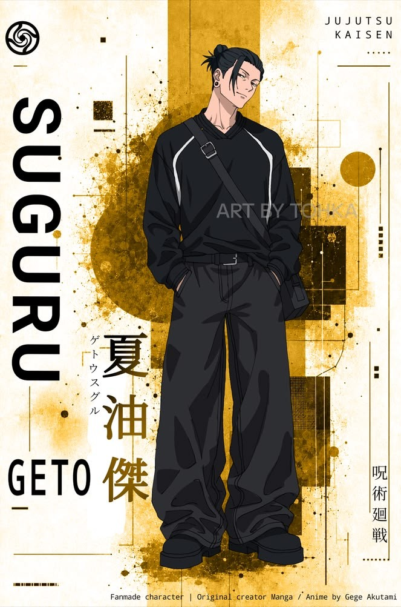
Grade: Special Grade
Affiliation: Formerly Jujutsu High
Role: Curse User
Personality: Intelligent, calm, confident and caring towards people he considers important.
Background: Geto was once a student at Jujutsu High and was one of Gojo's closest friends. After becoming disillusioned with the world of jujutsu, he left the school and became a curse user.
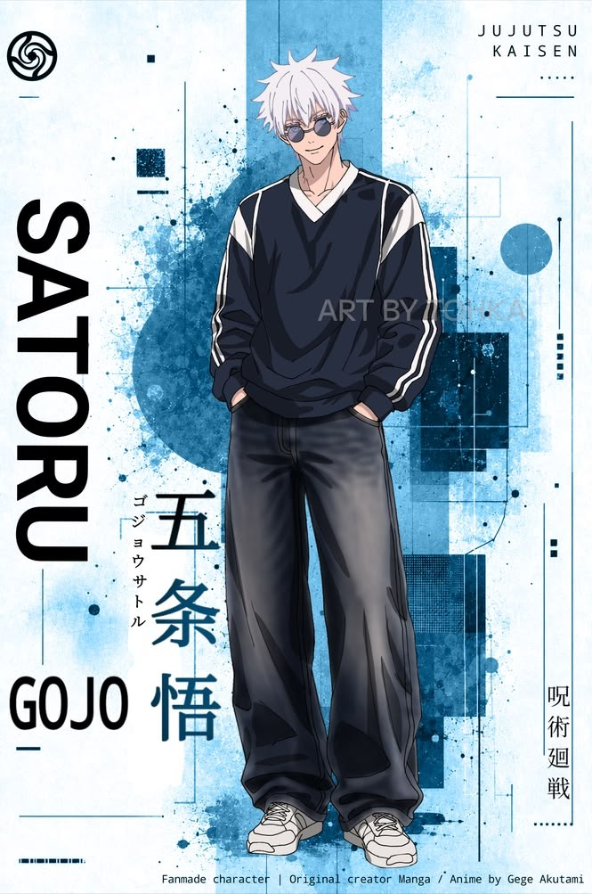
Grade: Special Grade
Affiliation: Jujutsu High
Role: Jujutsu Sorcerer / Teacher
Personality: Confident, playful, carefree and often jokes around, but becomes serious when protecting others.
Background: Gojo was born into the famous Gojo family and inherited both the Limitless technique and the Six Eyes. He became a teacher at Jujutsu High and wants to help create a better future for young sorcerers.
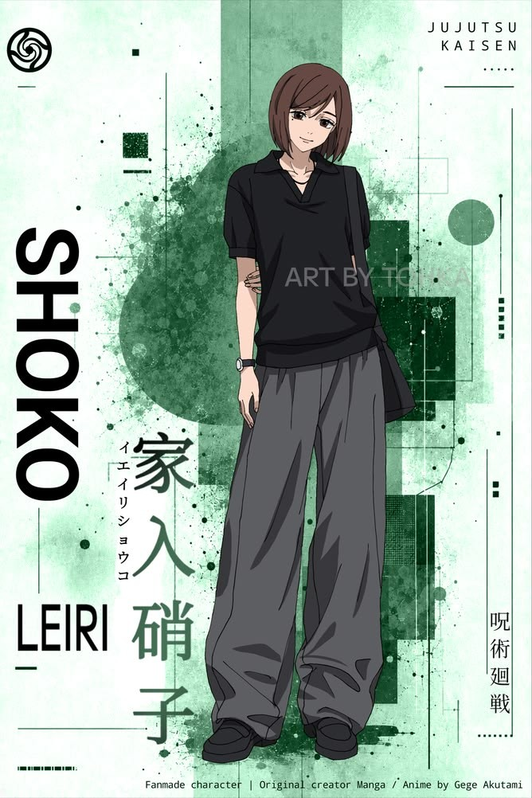
Grade: Grade 1 Sorcerer
Affiliation: Jujutsu High
Role: Doctor / Jujutsu Sorcerer
Personality: Calm, laid-back, practical and usually unbothered by the situations around her.
Background: Shoko was a student at Jujutsu High alongside Gojo and Geto. She later became the school's doctor and uses her knowledge of Reverse Cursed Technique to treat injured sorcerers.
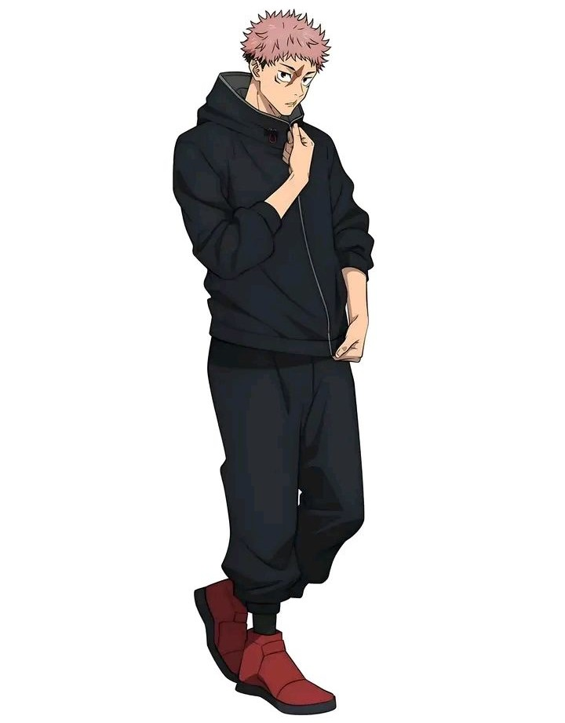
Grade: Grade 1 Sorcerer
Affiliation: Jujutsu High
Role: Jujutsu Sorcerer / Vessel
Personality: Kind, energetic, brave and caring towards others.
Background: Yuji was originally an ordinary high school student with incredible physical strength. His life changed after he became the vessel of Ryomen Sukuna.
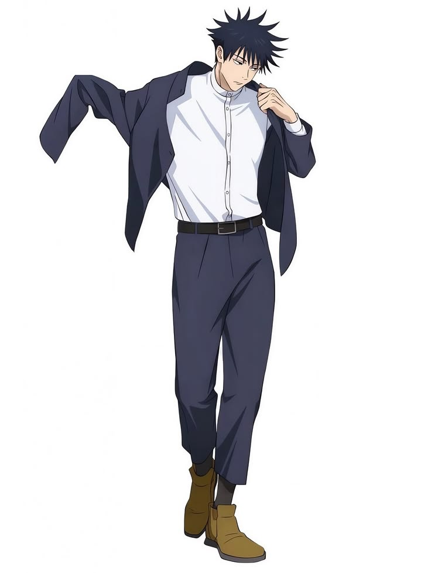
Grade: Grade 2 Sorcerer
Affiliation: Jujutsu High
Role: Jujutsu Sorcerer
Personality: Quiet, serious and reserved, but deeply cares about the people close to him.
Background: Megumi is a student at Jujutsu High and comes from the Zenin family. He inherited the powerful Ten Shadows Technique.
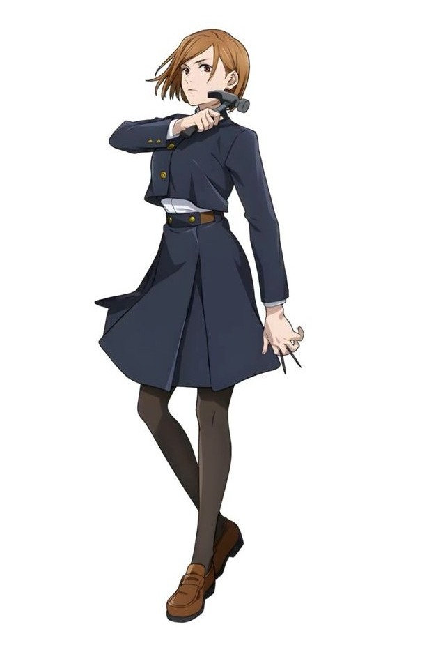
Grade: Grade 3 Sorcerer
Affiliation: Jujutsu High
Role: Jujutsu Sorcerer
Personality: Confident, outspoken, independent and determined.
Background: Nobara comes from a small rural town and moved to Tokyo to attend Jujutsu High. She wanted to experience life in the city while becoming a sorcerer.
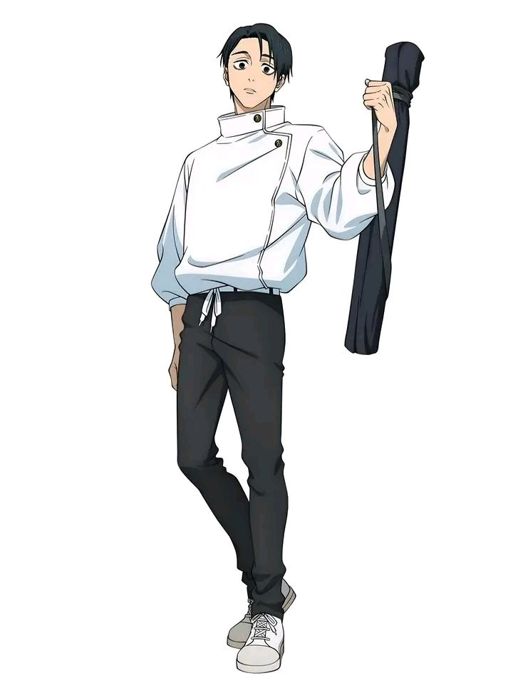
Grade: Special Grade
Affiliation: Jujutsu High
Role: Jujutsu Sorcerer
Personality: Kind, polite and caring, but becomes very serious when protecting others.
Background: Yuta was haunted by the cursed spirit of his childhood friend Rika. He later joined Jujutsu High and learned to control his cursed energy.
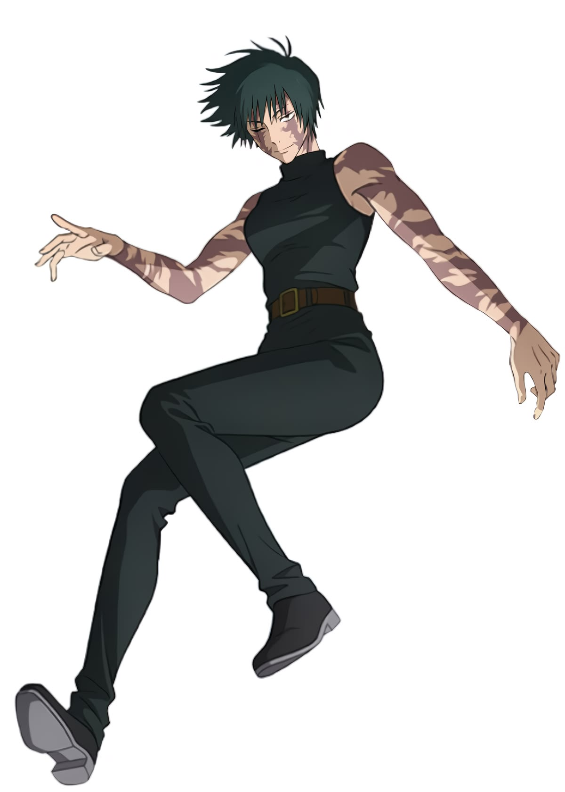
Grade: Grade 1 Sorcerer
Affiliation: Jujutsu High
Role: Jujutsu Sorcerer
Personality: Strong-willed, determined, independent and competitive.
Background: Maki was born into the Zenin clan but was treated poorly because she had very little cursed energy. She trained herself to become a powerful fighter.
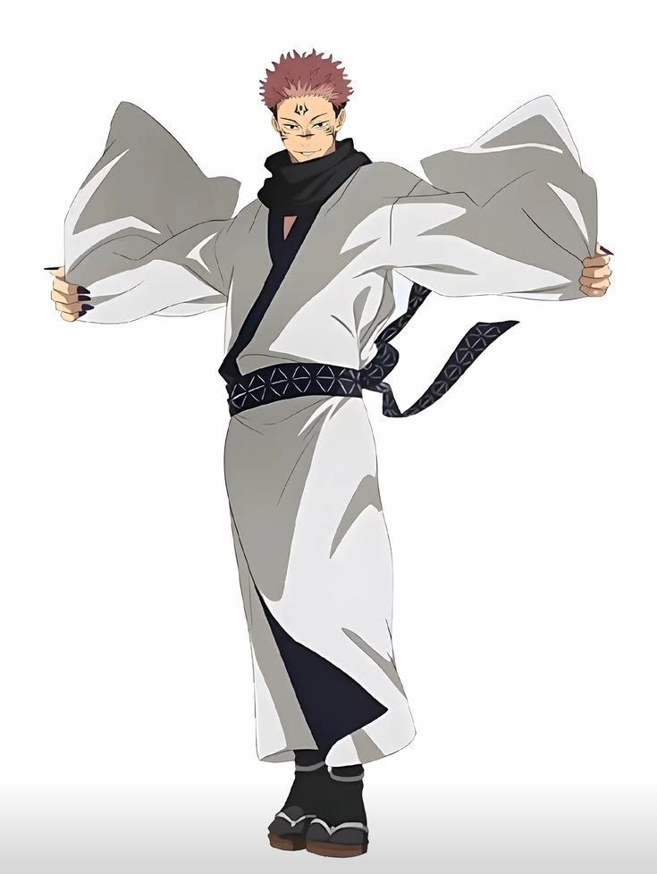
Grade: Special Grade / King of Curses
Affiliation: Himself
Role: Curse
Personality: Cruel, arrogant, confident and extremely selfish.
Background: Sukuna is known as the King of Curses. He existed over a thousand years ago and became one of the most feared beings in jujutsu history.
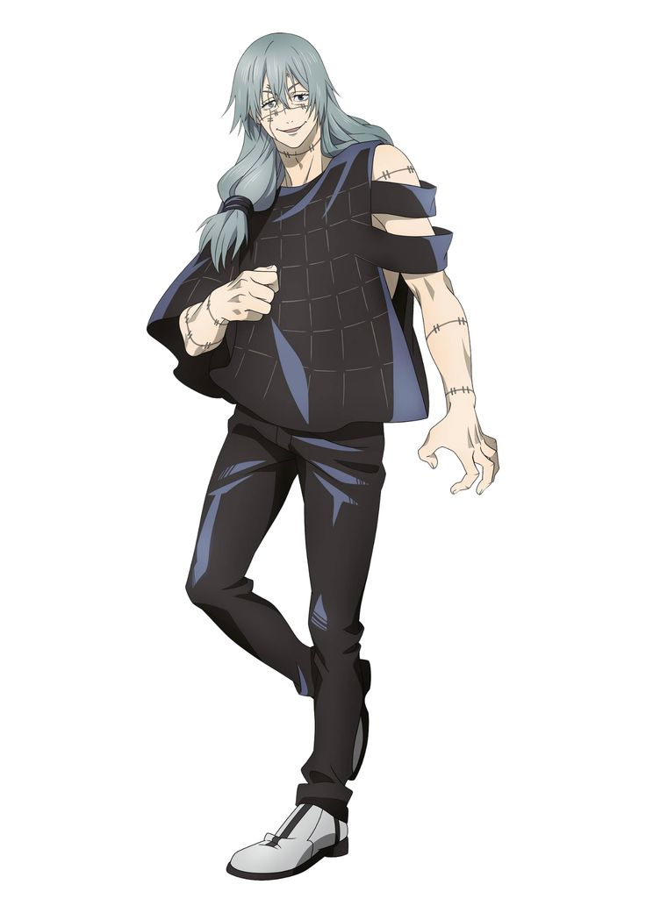
Grade: Special Grade Curse
Affiliation: Disaster Curses
Role: Cursed Spirit
Personality: Playful, curious, manipulative and extremely dangerous.
Background: Mahito is a cursed spirit born from humans' hatred and fear of one another. He is fascinated by the human soul and enjoys experimenting with his abilities.
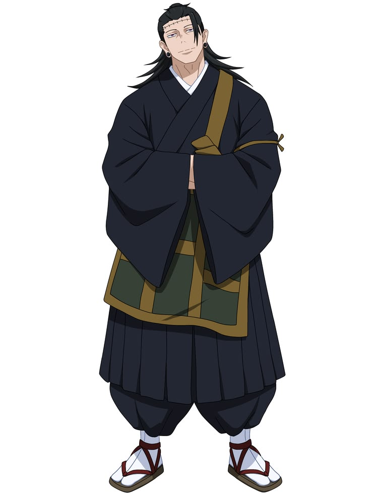
Grade: Special Grade Threat
Affiliation: Curse User / Cursed Spirits
Role: Ancient Sorcerer / Manipulator
Personality: Intelligent, patient, manipulative and curious about jujutsu.
Background: Kenjaku is an ancient sorcerer who has lived for over a thousand years by transferring his brain into different bodies.
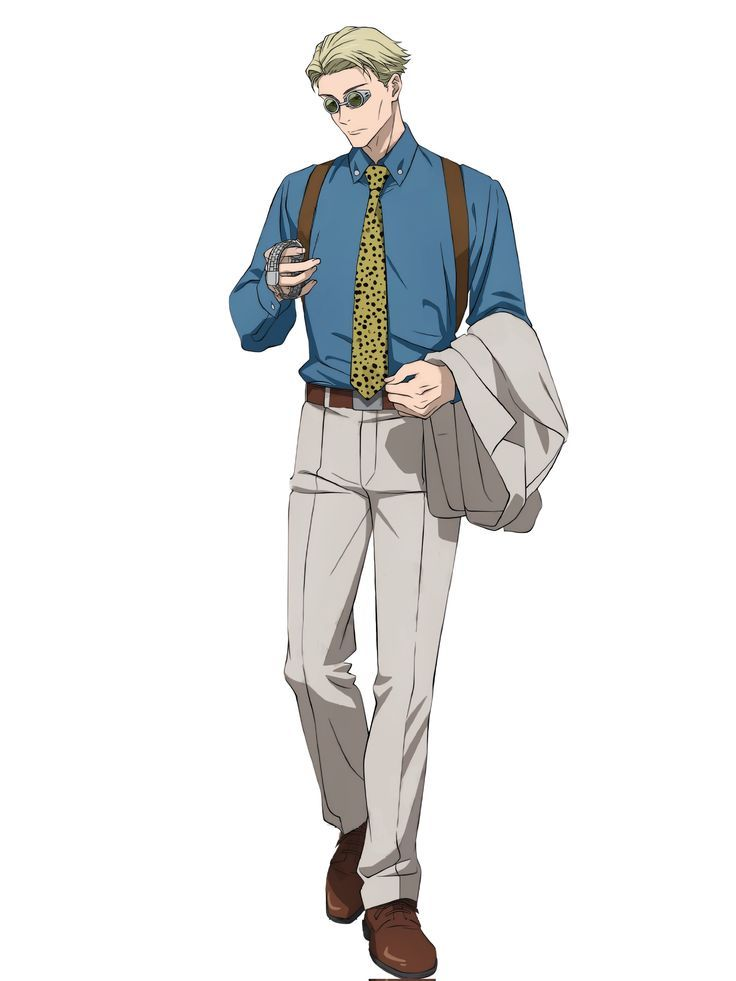
Grade: Grade 1 Sorcerer
Affiliation: Jujutsu High
Role: Jujutsu Sorcerer / Teacher
Personality: Calm, serious, responsible and practical.
Background: Nanami was a former student of Jujutsu High who left the jujutsu world to work as an office employee. He later returned to become a sorcerer and help younger students.
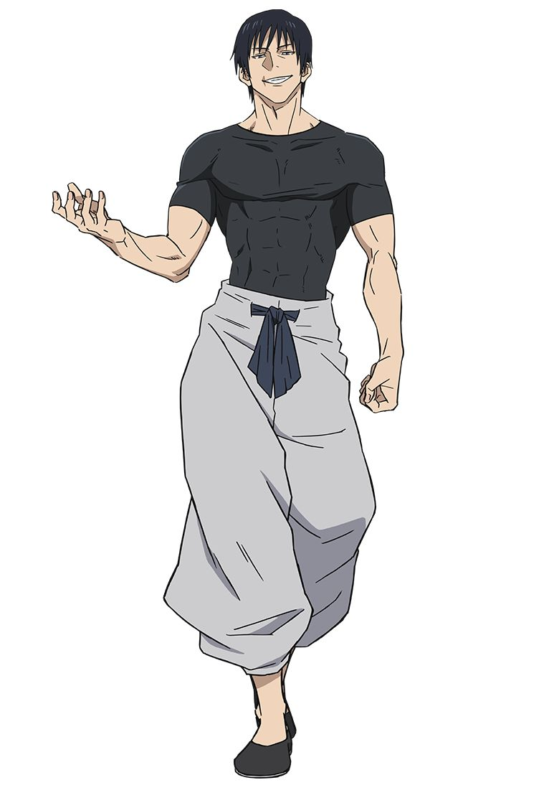
Grade: No Cursed Energy
Affiliation: Independent
Role: Sorcerer Killer
Personality: Confident, calm, ruthless and independent.
Background: Toji was born into the Zenin family but had almost no cursed energy. Because of his Heavenly Restriction, he developed incredible physical abilities and became a highly skilled assassin.
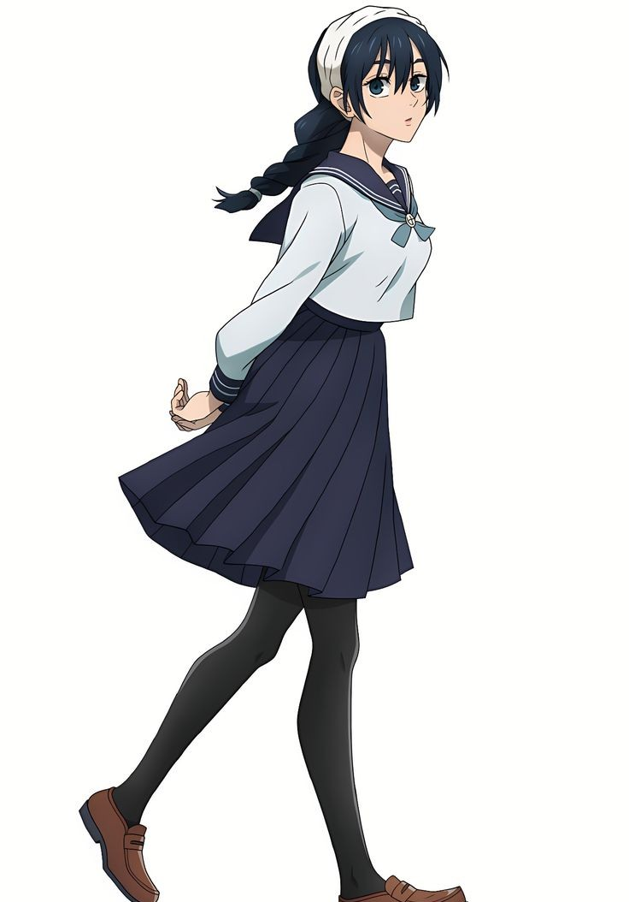
Grade: Star Plasma Vessel
Affiliation: Jujutsu High / Master Tengen
Role: Star Plasma Vessel
Personality: Cheerful, energetic, confident and friendly.
Background: Riko was chosen as a Star Plasma Vessel for Master Tengen. Gojo and Geto were assigned to protect her while she travelled to the Tombs of the Star Corridor.
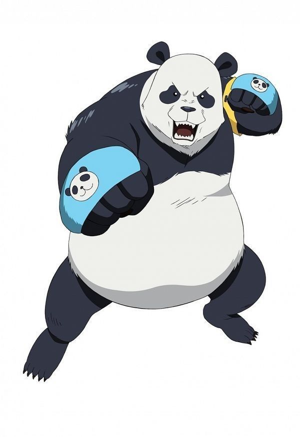
Grade: Semi-Grade 2
Affiliation: Jujutsu High
Role: Cursed Corpse / Student
Personality: Friendly, playful, caring and supportive towards his friends.
Background: Panda is a unique cursed corpse created by Masamichi Yaga. Despite his appearance, he is intelligent and can think and act like a human.
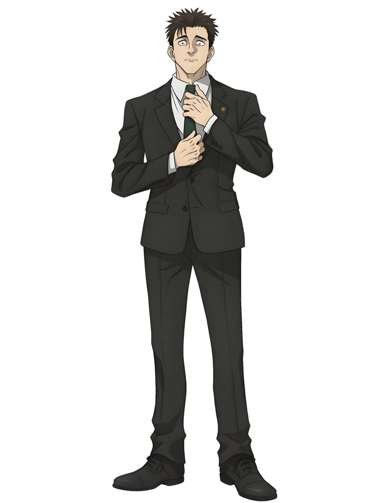
Grade: Grade 1 Sorcerer
Affiliation: Culling Game
Role: Jujutsu Sorcerer / Lawyer
Personality: Intelligent, serious, determined and strongly focused on justice.
Background: Higuruma was originally a defence lawyer who became involved in the Culling Game. After awakening his cursed technique, he became a powerful jujutsu sorcerer.
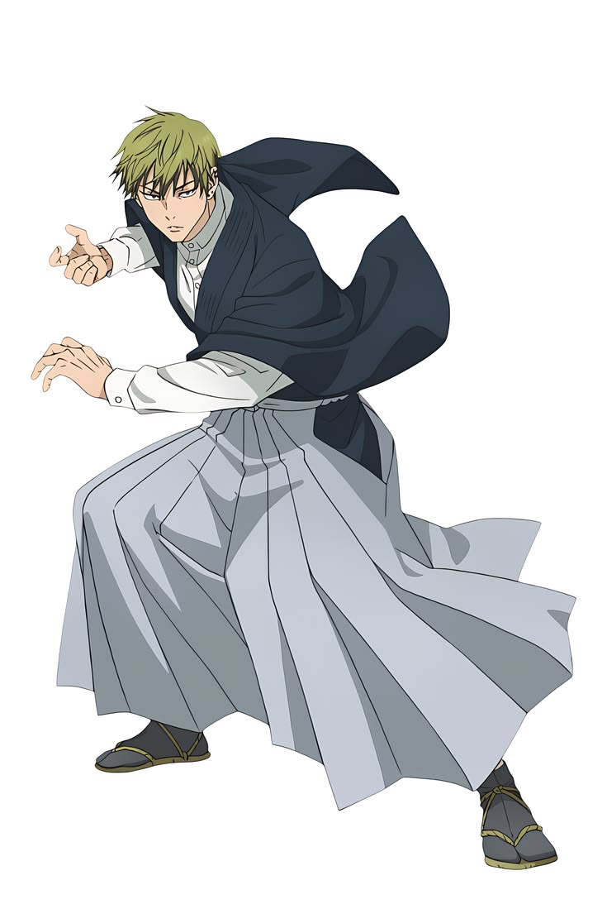
Grade: Grade 1 Sorcerer
Affiliation: Zenin Clan
Role: Jujutsu Sorcerer
Personality: Arrogant, confident, competitive and impatient.
Background: Naoya is a member of the Zenin clan and the son of Naobito Zenin. He was considered a talented sorcerer and believed he was destined to become the head of the Zenin clan.
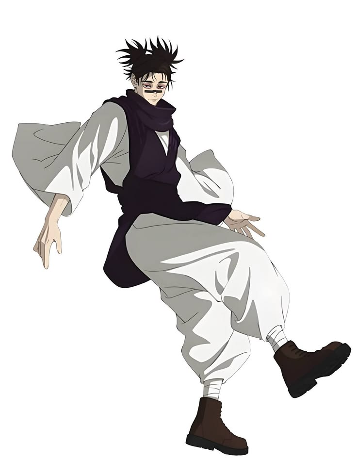
Grade: Special Grade Death Painting
Affiliation: Death Painting Wombs
Role: Cursed Womb / Sorcerer
Personality: Serious, quiet and protective of his brothers.
Background: Choso is one of the Death Painting Wombs and the eldest of the brothers. He initially fought against Yuji but later became protective of him.
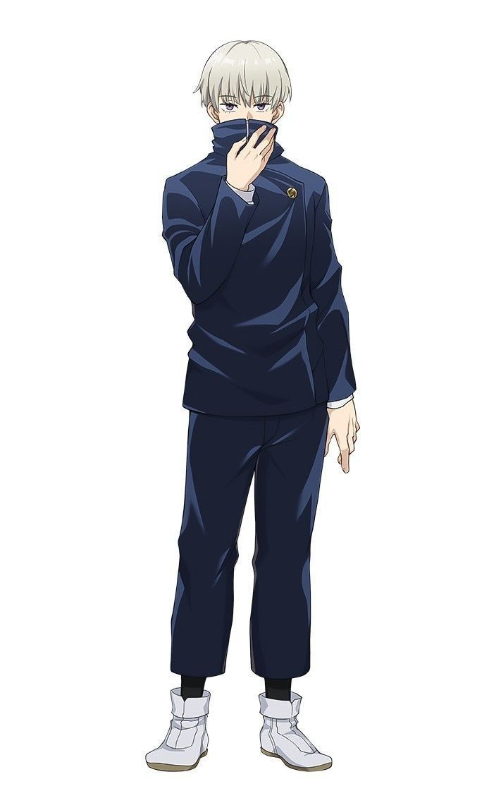
Grade: Semi-Grade 1 Sorcerer
Affiliation: Jujutsu High
Role: Jujutsu Sorcerer / Student
Personality: Quiet, friendly, caring and thoughtful towards his friends.
Background: Toge is a student at Jujutsu High who comes from the Inumaki family. Because of his cursed technique, he normally speaks using rice ball ingredients to avoid accidentally hurting people.
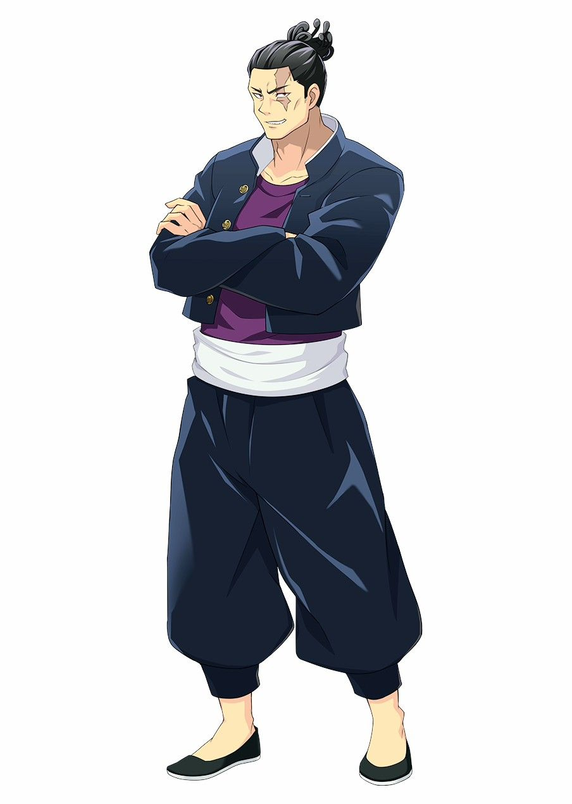
Grade: Grade 1 Sorcerer
Affiliation: Kyoto Jujutsu High
Role: Jujutsu Sorcerer / Student
Personality: Confident, energetic, loud and extremely passionate about his interests.
Background: Todo is a powerful student from Kyoto Jujutsu High. He is known for his unusual personality and his strong bond with Yuji after fighting alongside him.